Посібник
Як працює Shotleaf
Усе, що він уміє, крок за кроком: що натиснути, що ви побачите і що робити, якщо щось не працює. На картинках справжні вікна Shotleaf.
Перший запуск
- Завантажте
Shotleaf.zip, відкрийте його й перетягніть Shotleaf у Програми. - Відкрийте Shotleaf. Першого разу macOS скаже, що не може перевірити програму: Shotleaf поки не нотаризований Apple. Відкрийте Системні параметри › Приватність і безпека, прогорніть униз і натисніть Усе одно відкрити. Це потрібно зробити один раз.
- Відкриється майстер налаштування. Дайте два дозволи, які він просить. Щойно ви ввімкнете дозвіл у Системних параметрах, Shotleaf сам перезапуститься.
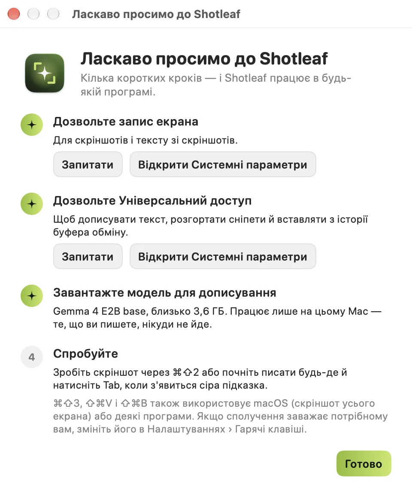
- Запис екрана
- Для скріншотів і тексту з екрана. Без нього на знімку видно лише шпалери.
- Універсальний доступ
- Щоб вставляти з історії буфера в програму, де ви були, розгортати сніпети під час набору і дописувати текст.
Дописуванню тексту ще потрібна мовна модель Gemma 4 E2B (близько 3,6 ГБ). Завантажте її з майстра або пізніше в Налаштуваннях › Дописування. Усе інше працює і без неї.
Shotleaf живе в рядку меню: значок листка вгорі екрана. Кожен інструмент має й сполучення клавіш.
Скріншоти
Натисніть ⌘⇧2. Екран притіниться, а за вказівником ходитиме лупа, щоб цілитися з точністю до пікселя.
| Тягніть | область; поруч видно її розмір |
| Клік | вікно під вказівником |
| ↩ або F | увесь екран |
| R | та сама область, що й минулого разу |
| S | перемкнутися на довгий скріншот |
| C | скопіювати колір під вказівником як HEX, наприклад #7CB342 |
| esc або правий клік | скасувати |
Знімок відкривається в редакторі. Щоб обійтися без нього, виберіть у Налаштуваннях › Скріншоти › Після знімка: копіювати, зберегти або обидва.
Із затримкою
Щоб зняти відкрите меню чи підказку, зробіть знімок із рядка меню: Скріншот із затримкою, 3, 5 чи 10 секунд. Угорі екрана йде зворотний відлік; на знімок він не потрапляє. Затримку для всіх знімків можна поставити в Налаштуваннях › Скріншоти.
Повернутися до попереднього знімка
⌃⌥⌘E знову відкриває останній знімок у редакторі, таким, яким він був зроблений. У рядку меню в Недавніх знімках лишаються останні десять, навіть після перезапуску. ⌃⌥⌘V відкриває в редакторі будь-яку картинку з буфера, щоб позначити її, як скріншот.
Редактор
Угорі інструменти, внизу дії з результатом. Кожен інструмент має клавішу, тож мишка для перемикання майже не потрібна.
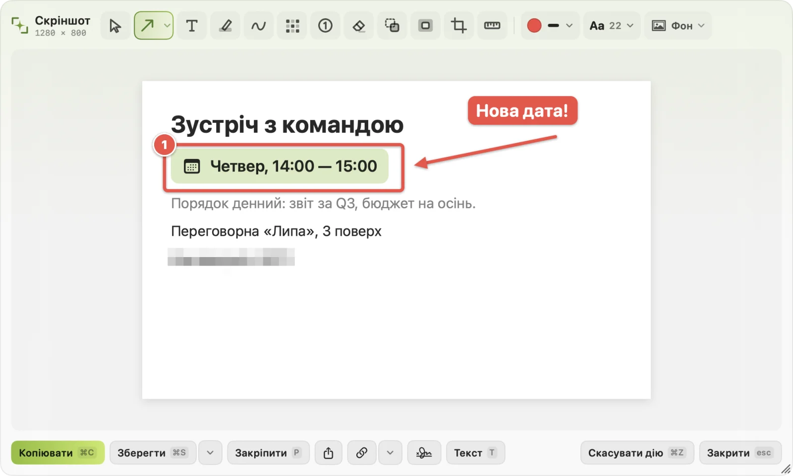
| 1 | Стрілка. У меню кнопки стрілки ще рамка й овал. |
| 2 · O | Рамка · Овал |
| 3 | Текст: виноска на плашці |
| 4 · D | Маркер · Перо |
| 5 | Розмиття: ховає імена, номери, обличчя |
| 6 | Кроки: кожен клік ставить наступний номер, 1, 2, 3 |
| 7 | Гумка: зафарбовує кольором довкола, стирає текст із рівного фону |
| 8 | Вирізати: переносить шматок картинки |
| 9 | Фокус: притіняє все, крім області |
| C · M | Обрізати · Лінійка (довжина в пікселях) |
| 0 | Вибір: клацніть позначку, щоб пересунути, змінити розмір чи видалити (⌫) |
Колір, товщина лінії й розмір тексту поруч з інструментами. ⌘Z скасовує, ⇧⌘Z повертає. Клавіші можна змінити, а зайві інструменти сховати в Налаштуваннях › Інструменти.
Що робити з результатом
| ⌘C | Копіювати. Після цього редактор закривається сам; щоб лишався, вимкніть це в Налаштуваннях › Скріншоти. |
| ⌘S | Зберегти в теку з налаштувань (спершу це Робочий стіл). Стрілка поруч зберігає як PNG, JPEG, HEIC чи PDF туди, куди ви виберете. |
| Перетягніть | картинку (у режимі Вибір, 0) одразу в чат, лист чи теку |
| P | Закріпити: знімок висить поверх вікон, поки ви працюєте. Наведіть на нього, щоб скопіювати чи закрити. |
| Посилання | Кнопка посилання завантажує знімок і копіює посилання, яке працює 1, 6 чи 12 годин; потім знімок видаляється. |
| Поділитися | AirDrop, Повідомлення, Пошта та інше з системного меню «Поділитися» |
| T | Текст: виділяйте слова просто на знімку, ⌘C копіює їх |
| esc | Закрити |
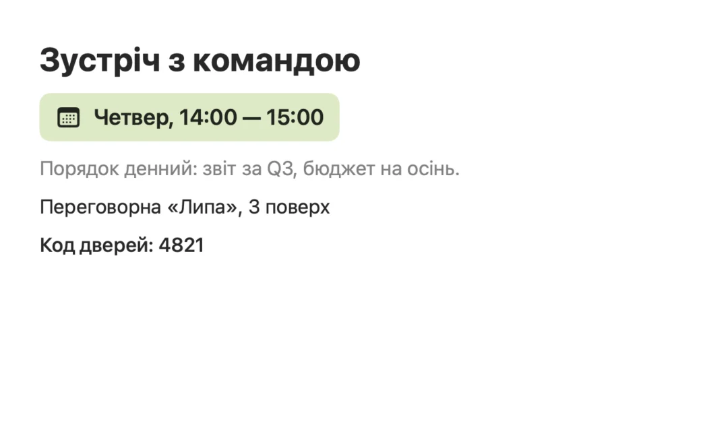
Фон і водяний знак
Фон кладе знімок на градієнт чи колір, із заокругленими кутами й відступом на ваш вибір: зручно для дописів і презентацій. Для фото те саме меню вміє прибрати фон і лишити головне. Кнопка з підписом ставить ваш водяний знак: текст чи логотип в одному з дев’яти місць, з розміром, прозорістю й нахилом.
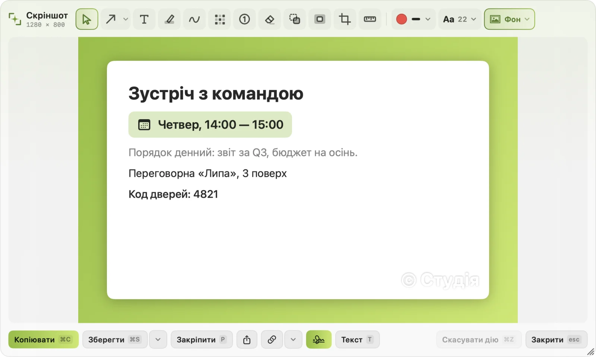
Довгі скріншоти
Для всього, що довше за екран: сторінки, чату, таблиці.
- Натисніть ⌘⇧3 (або S у звичайному виборі області) і виділіть ту частину, що прокручується.
- Повільно прокручуйте вниз у своєму темпі. Смужка під областю показує, скільки вже знято.
- Натисніть Готово або ↩. Довгий знімок відкриється в редакторі.
Якщо смужка пише Занадто швидко, прокрутіть трохи назад і продовжуйте повільніше. Шапки, що стоять на місці (верхня панель сайту), у результаті будуть один раз.
Текст з екрана
Натисніть ⌘⇧1 і виділіть будь-яку область: картинку, відео, вікно, з якого не копіюється. Текст відкриється в маленькому вікні, де його можна виправити перед копіюванням. ⌘↩ копіює все.
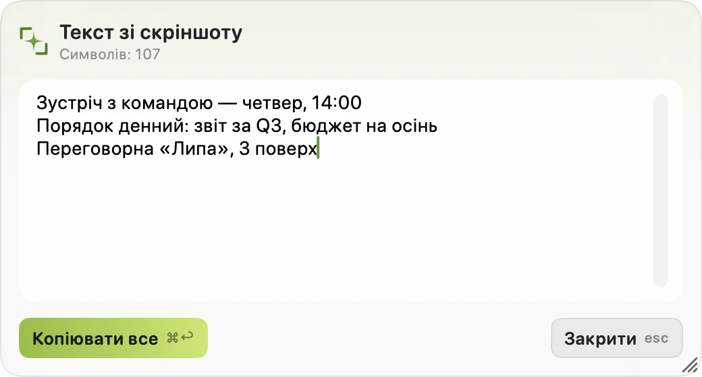
Текст розпізнається на вашому Mac, працює без інтернету й читає українську, англійську та інші мови, які знає macOS.
Історія буфера обміну
Усе, що ви копіюєте, зберігається: текст, посилання, картинки, файли й кольори. Натисніть ⇧⌘V, і панель відкриється біля вказівника.
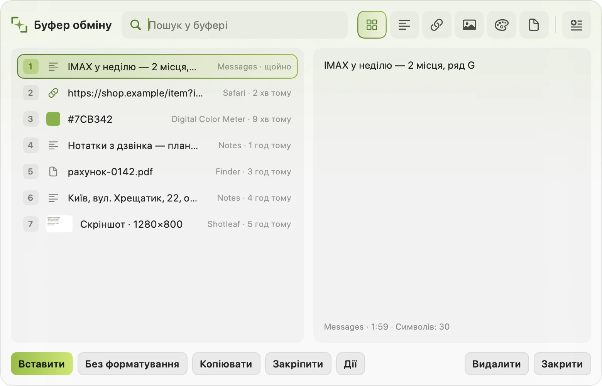
| ↩ | вставити в програму, де ви були |
| 1–9 | одразу вставити цей рядок |
| ⌥↩ | вставити без форматування |
| ⌘↩ | лише скопіювати, не вставляти |
| ⌘P | закріпити: закріплене лишається, коли історію очищують |
| ⌘E | відкрити картинку в редакторі скріншотів |
| ⌘⌫ | видалити запис |
| ⇧Tab | лише текст, посилання, картинки, кольори чи файли |
| Tab | перейти до сніпетів |
Пошук
Просто почніть друкувати. Знаходить будь-яке слово, зокрема слова на картинках і скріншотах.
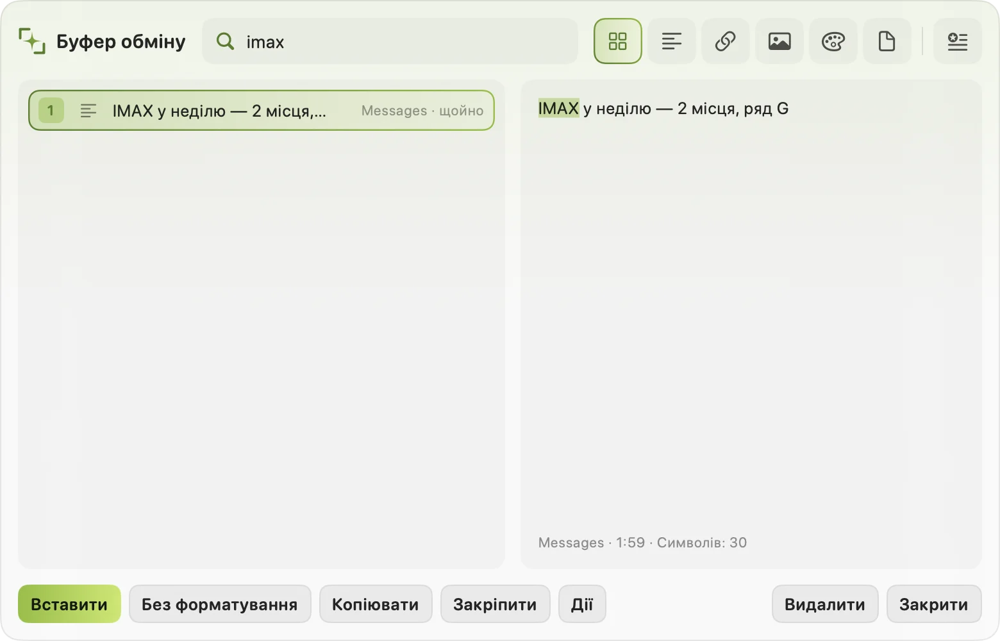
Кілька одразу
Позначайте записи ⌘-кліком або ⇧↓ / ⇧↑. Тоді ↩ вставляє їх разом, кожен з нового рядка, а ⌘↩ по черзі: перший одразу, а кожне наступне ⇧⌘V вставляє наступний. Зручно заповнювати форму поле за полем.
Швидкі дії
⌘K показує, що можна зробити із записом перед вставкою: очистити посилання від трекерів, змінити регістр, з’єднати рядки, прибрати зайві пробіли, відформатувати JSON, зберегти як сніпет.
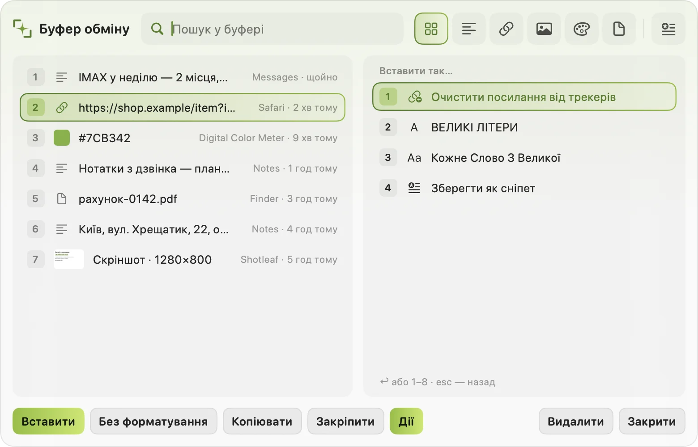
Приватність
- Паролі, які менеджери паролів позначають як приватні, не зберігаються ніколи, а з програм у Налаштуваннях › Буфер обміну › Не зберігати скопійоване з не зберігається нічого.
- Текст, схожий на номер картки чи токен доступу, не записується на диск і зникає з історії через хвилину.
- З рядка меню історію можна призупинити на 5 хвилин або очистити. Типово вона тримає 200 записів, картинки 30 днів; обидва числа є в налаштуваннях.
Сніпети
Текст, який ви часто набираєте, збережений один раз: відповіді, підписи, адреси, реквізити. Ними можна користуватися двома способами:
- Скороченням. Наберіть його в будь-якій програмі, наприклад
;відп, і воно перетвориться на повний текст. - З панелі. ⇧⌘B або Tab у панелі буфера. Ліворуч папки (← →), ↩ вставляє.
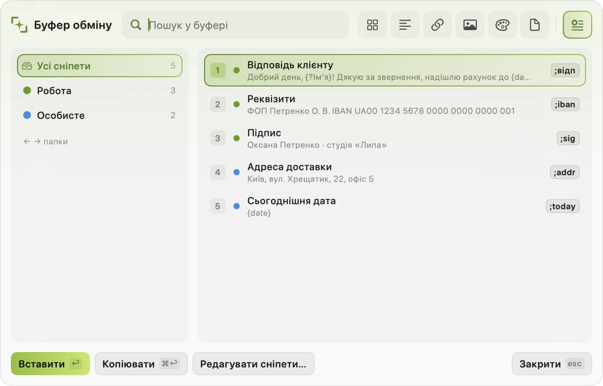
Підстановки й запитання
{date} · {time} | сьогоднішня дата, поточний час |
{clipboard} | те, що ви скопіювали останнім |
{cursor} | де опиниться курсор після вставки |
{?Name} | запитання: панель спитає його перед вставкою |
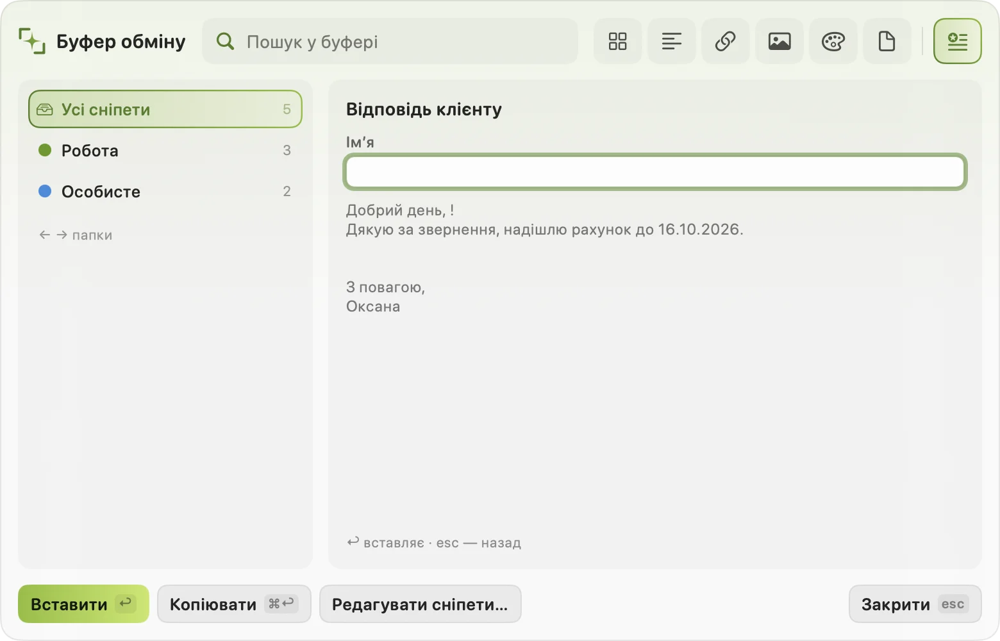
Редактор сніпетів
Редагувати сніпети… у панелі чи в рядку меню. Ліворуч кольорові папки, посередині сніпети, праворуч той, що ви редагуєте, з його скороченням, папкою й картинками (вони вставляються разом із текстом). Поділитися… на папці дає її тексти й картинки файлами, щоб надіслати колезі.
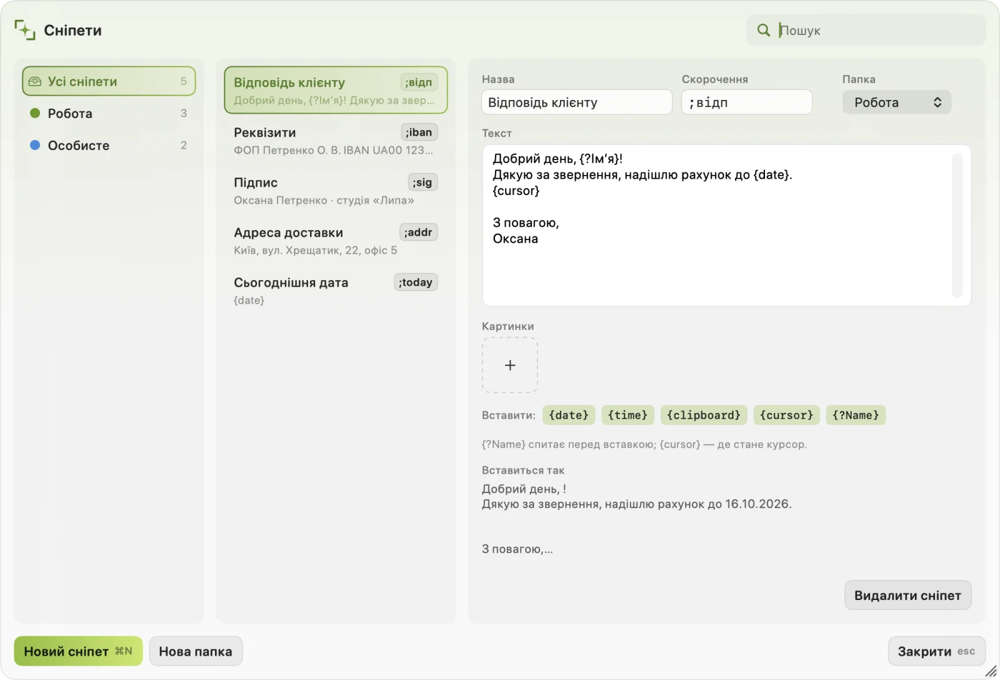
Дописування тексту
Поки ви пишете в будь-якій програмі, після курсора з’являється сіра підказка. Прийміть її або не зважайте й пишіть далі.
| Tab | взяти наступне слово |
| ⌥Tab | взяти всю підказку |
| esc | сховати її |
| :слово | емодзі за назвою: :fire пропонує 🔥; наступні літери звужують список, 1–9 або клік вибирає |
Слово з помилкою отримує виправлення, яке теж береться клавішею Tab. Модель працює на вашому Mac: нічого з набраного нікуди не надсилається.
У Налаштуваннях › Дописування: Підказки від обережних (лише певні й короткі) до сміливих; Враховувати текст на екрані, щоб підказки пасували до переписки чи сторінки, на яку ви відповідаєте; Враховувати щойно скопійоване; і Вчитися мого стилю: кілька ваших текстів, лише на цьому Mac, щоб підказки звучали як ви. Забути мої тексти їх видаляє.
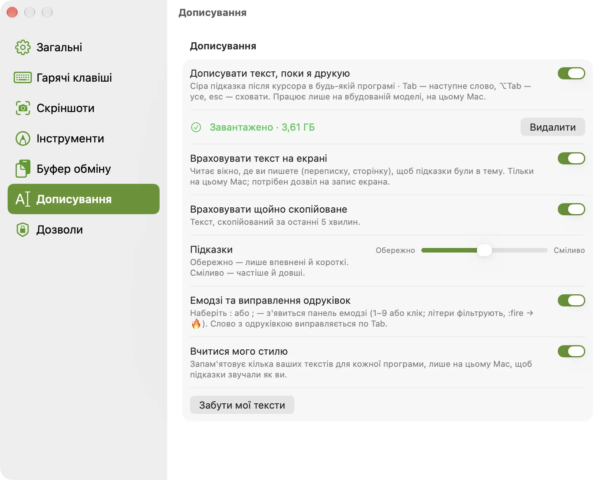
Водяні знаки на фото
Водяний знак на фото… у рядку меню ставить один водяний знак на цілу папку фото. Перетягніть фото у вікно, задайте текст чи логотип, розмір, прозорість і нахил та виберіть місце для всіх. Будь-якому фото можна дати своє місце або пересунути знак вручну.
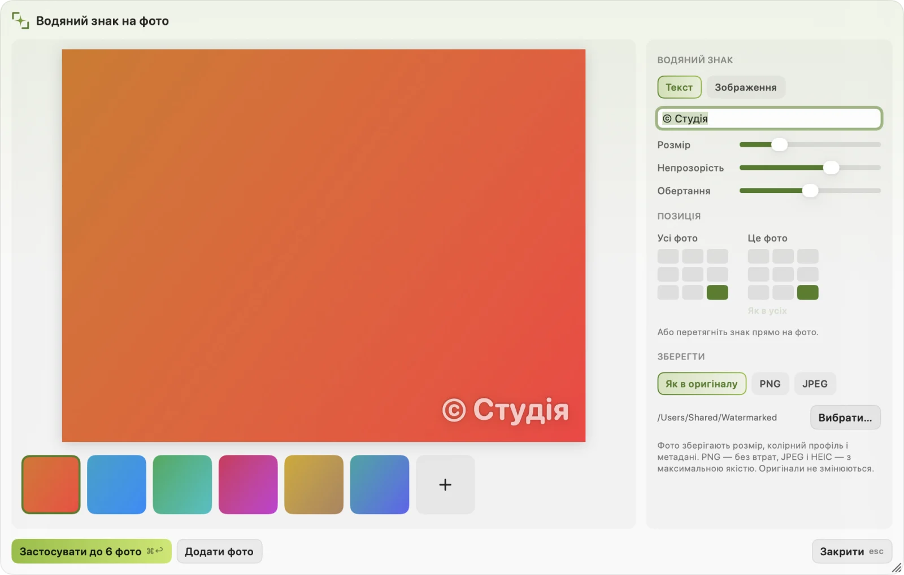
Результати йдуть у теку Watermarked. Фото зберігають розмір, колірний профіль і дані про зйомку; оригінали не змінюються.
Налаштування
Відкриваються з рядка меню: Налаштування…
Вимкніть непотрібне
У Загальних › Функції є перемикач для кожного інструмента. Вимкнений зникає з меню, звільняє свої сполучення клавіш для інших програм і перестає працювати у фоні. Його налаштування й дані лишаються, на випадок, якщо ввімкнете знову. Тут же мова (українська чи англійська), звуки, значок у Dock і запуск під час входу.
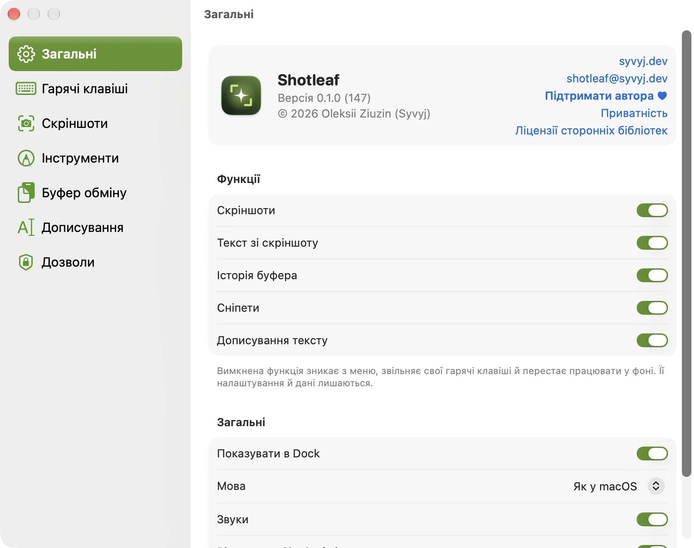
Свої сполучення клавіш
Гарячі клавіші: клацніть сполучення й натисніть нове. ⌘⇧3 у macOS ще й знімок усього екрана, а деякі програми використовують ⇧⌘V чи ⇧⌘B; якщо щось заважає потрібному вам, змініть тут.
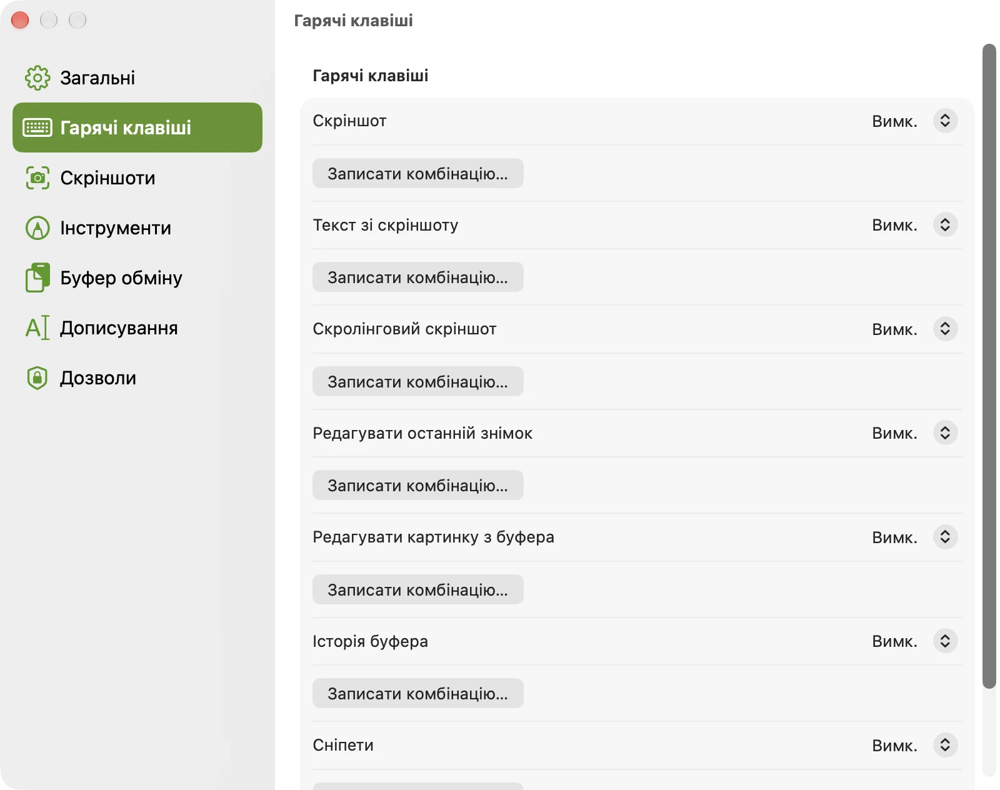
Якщо щось не працює
На знімках лише шпалери або вставка перестала працювати після оновлення
macOS може перестати довіряти новій версії дозволи, хоча перемикачі виглядають увімкненими. Відкрийте Системні параметри › Приватність і безпека, приберіть Shotleaf кнопкою – з Запису екрана й Універсального доступу, потім дозвольте знову. Shotleaf перезапуститься сам.
Сполучення клавіш нічого не робить
Можливо, його використовує інша програма: змініть його в Налаштуваннях › Гарячі клавіші. Перевірте також, що інструмент увімкнено в Налаштуваннях › Загальні › Функції. Якщо клавіатура працює через програму спільного доступу (Deskflow, Synergy, Barrier), та передає символи, а не клавіші, тож сполучення з цифрами можуть залежати від розкладки на кожному комп’ютері; сполучення з буквою працює в будь-якій розкладці.
Сніпети не розгортаються або з історії нічого не вставляється
Обом потрібен дозвіл Універсального доступу: дивіться Налаштування › Дозволи. Сніпетам ще потрібно, щоб їхній інструмент був увімкнений у Загальних › Функції.
Під час набору немає сірих підказок
Перевірте, що модель завантажена в Налаштуваннях › Дописування і що дописування ввімкнене в Загальних › Функції. Деякі програми не дають іншим читати свої текстові поля, а в полях для паролів підказок немає.
Як видалити все?
Налаштування › Загальні › Видалити всі дані Shotleaf… видаляє історію, сніпети, недавні скріншоти, ваш стиль письма, модель і налаштування, а потім закриває програму. Після цього перетягніть Shotleaf із Програм у Смітник.
Не вийшло? Напишіть на shotleaf@syvyj.dev або створіть issue на GitHub. Якщо Shotleaf упав, додайте найновіший файл Shotleaf-*.ips з ~/Library/Logs/DiagnosticReports.